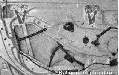
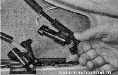
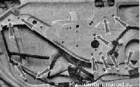
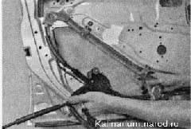

Стеклоподъемник снятие и установкаСнятие 1. Подготавливаем автомобиль к выполнению работы. 2. Снимаем обивку двери. 3. Поднимаем стекло до упора и фиксируем стекло в этом положении (например, молярным скотчем). 4. Торцовым ключом на 10 мм отворачиваем по два болта крепления стекла к каждой стойке стеклоподъемника. 
5. Отворачиваем винт крепления внутренней ручки замка. 6. Перерезаем изоляционную ленту крепления колодок жгута проводов стеклоподъемника, удаляем поролон. 7. Разъединяем колодку жгута проводов мотор-редуктора стеклоподъемника. 8. Торцовым ключом на 10 мм отворачиваем И гаек крепления стеклоподъемника к усилителю двери.  9. Извлекаем стеклоподъемник из двери. Устанавливаем стеклоподъемник в обратной последовательности, смазав направляющую стеклоподъемника пластичной смазкой. Чтобы колодки жгута проводов не стучали на неровностях, обматываем их поролоном и заматываем изоляционной лентой. |